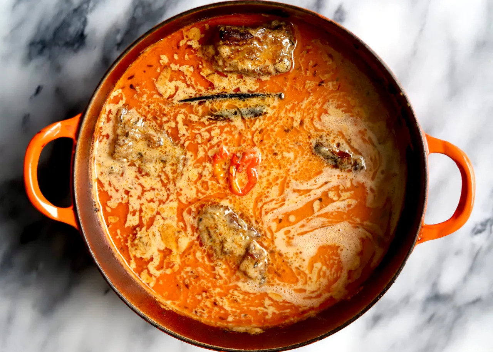

Groundnut soup

Description
Groundnut soup is a popular kind of Ghanaian soup made from, as the name reveals, groundnuts. Depending on where in the world you are, you may either call them groundnuts or peanuts. Groundnut soup is deeply comforting and can be made with a variety of proteins.
Groundnut soup is sometimes called peanut butter soup, however, locally it has always been groundnut soup. In some local languages, it is known as Azi Detsi (Ewe), Gige Honyu (Ada), or Nkatenkwan (Twi).
Groundnut soup has several variations, usually depending on the protein used just like okro soup can have various ways of preparation.
Ingredients
- 400 grams groundnut paste or peanut butter
- 1.8 kg whole chicken cut into smaller pieces
- 1 medium onion chopped
- large onion blended
- 7 scotch bonnets
- 3 tablespoons ginger blended
- 3 large tomatoes
- 2 tablespoons tomato paste
- salt
- basil
- water
Steps
- Mix the groundnut paste with about 1 litre of water.
- Add 1 tablespoon of tomato paste and, about 3 scotch bonnets (slightly crushed), the chopped onions and mix thoroughly.
- Over low to medium heat, cook until thickened and there is oil on top. This should take roughly 20 minutes.
- Mix the cooked groundnut paste with about 3 litres of water and then strain into a large pot. The pot should be large enough with some extra space to accommodate overboiling or overflowing.
- Turn on the heat over medium and let the groundnut soup come to a rolling boil for about 30 minutes and then leave to simmer.
- Add tomatoes, 1 tablespoon of tomato paste, and about 4 scotch bonnets, and leave to simmer further.
- In another pot add chicken, ginger, about ½ of the blended onions, scotch bonnets, salt, and basil, and steam for about 20 minutes making sure to add a bit of water to get a broth.
- Add steamed chicken plus the broth to the soup.
- Take out the tomatoes and scotch bonnets from the soup and blend until smooth.
- Strain the blended mixture and add it back to the soup. Also, add the rest of the blended onions to the soup.
- Leave the soup to simmer for further 60 minutes and add salt until the soup has thickened.
- Serve hot with fufu, boiled rice, kokonte, yam, or boiled ripe plantain.